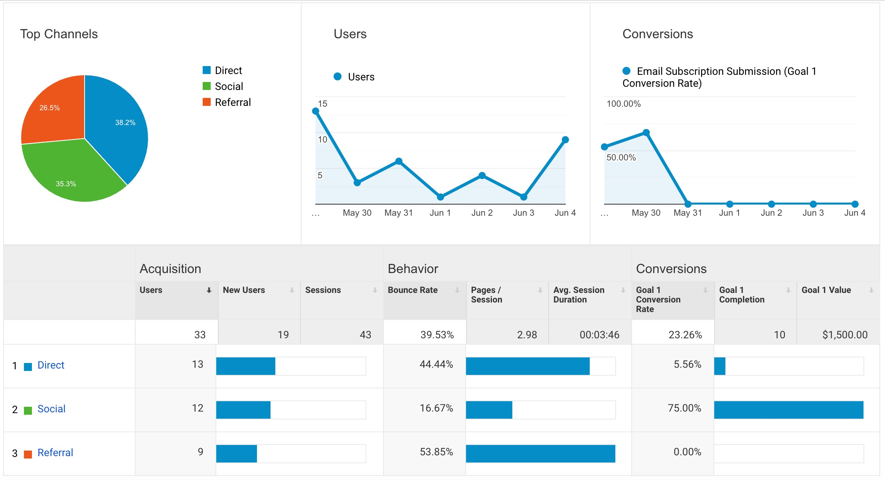
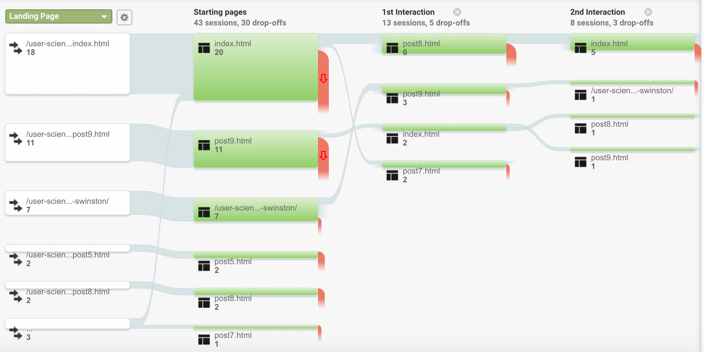
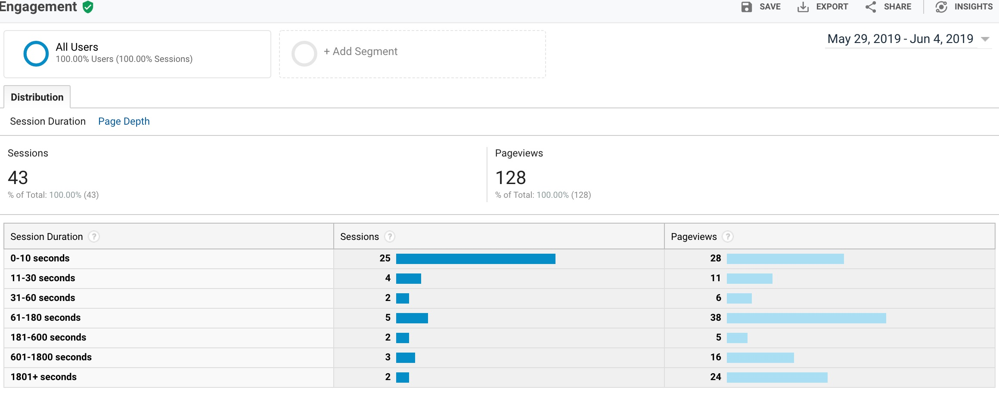

It’s the 10th week of this User Science Journal!
Curtain Call! In the past 9 weeks, I've learned a great deal about usability, accessiblity, user testing, and data analytics. It's now time for a summarization and reflection of the last few weeks of testing and data analytics. It can take an additional ten weeks to cover all the aspects of Google Analytics(GA). So to quickly recap, GA has been the tool I've used to collect data, set goals, and set experiments to drive visitors to complete the goals set for this User Science Journal. I was astonished at how easy it was to integrate GA on webpages. You can read the about how it was done on my Blog Post 7. This week, I'll give a brief summary and reflection of the collected data and my goal project.
Goal Experiment
One of the surprises I found in the inital gathering of traffic data was although I had promoted the site through my Facebook page, the data showed the source were more from Direct rather than Social. The Source data remained similar in the most recent week of tracking. Interestingly, the bounce rate was lowest with the highest conversion rate via Social. It can be inferred from the data that since the post on Social via Facebook was a direct ask, people positively responded.

I had set a couple of goals for the Journal, which I discussed in detail on my Blog Post 8. The first goal was directing users to click on my Blog Post 7 and the second was to have visitors click on the Subscribe! button on the Index page. In GA's goal overview tool, it recorded 15 completions with a conversion rate of 34.88% and in terms of dollar value, it earned $1,505.
Last week, I conducted an A/B testing experiment on the website to gauge how well a slight change will affect the coversion rate of a goal. My set goal was to drive visitors to click on the blue Subscribe! button on the Index page. I made a slight change to the location of the button by moving it to the from the left side of the screen (Original) to the right side (Variant 1).


The experiment resulted in more clicks on the button in the Variant 1 rather than the original:
Summary and Reflection
The process of extracting meaning from data collected through GA is not a precise science. Conducting user testing alongside the data collection can definitely enhance the meaning. In the few weeks of data collection on the User Science Journal, I found some interesting patterns. As shown in the below Behavior Flow visual, drop-offs numbers are quite high.
The ultimate goal of most businesses is to gain profits. With this goal in sight and using the data collected from GA, the conclusion I could make is the content of my User Science Journal is marketed to the wrong audience. With 43 sessions, 25 of those were 10 seconds or less long. According to GA, 52.38% of the site's visitors have an afinity for food & dining and the rest are aficionados of lifestyles/hobbies/arts and theater. Given this information, perhaps if I changed the blog to focus on food, I should expect a better conversion rate. :-)

Overall, I am comfortable with data collection to help businesses make improvement decisions. However, I also care about cultures and technology’s role in shaping that culture. Through this lens, I find tracking users and using that data alone to categorize and predict people's behavior problematic.